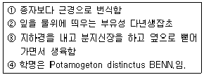

식물보호기사 (2003-08-31 기출문제)
1과목: 식물병리학
1. 파이토알렉신(phytoalexin)의 설명으로 옳지 못한 것은?
- 기주-기생체의 상호작용에 의해서 형성된다.
- 병 저항성물질로 다양한 종류가 있다.
- 완두에는 Rishitin이 형성된다.
- Phytoalexin 물질의 종류는 식물의 종에 따라 결정된다.
(정답률: 66%)

2. 키다리병에 걸린 벼의 키가 커지는 이유를 잘 설명한 것은?
- 병원균이 탄소 동화 작용을 촉진하기 때문에
- 병원균이 옥신을 분비하기 때문에
- 병원균이 싸이토카이닌을 분비하기 때문에
- 병원균이 지베렐린을 분비하기 때문에
(정답률: 92%)
3. 뽕나무 오갈병균은 무엇인가?
- 바이러스
- 파이토플라스마
- 세균
- 곰팡이
(정답률: 86%)
4. 오이 모자이크병을 매개하는 곤충은?
- 끝동매미충
- 애멸구
- 번개매미충
- 복숭아혹진딧물
(정답률: 83%)
5. 고추역병(疫病)이 많이 발생할 수 있는 환경과 가장 관계 깊은 것은?
- 이어짓기 - 가뭄
- 돌려짓기 - 과습
- 이어짓기 - 침수
- 돌려짓기 - 침수
(정답률: 81%)
6. 어떤 살균제를 계속해서 사용하면 그 효력이 떨어지는 이유는?
- 기상의 변화
- 토양 조건의 변화
- 내성균의 발생
- 기주 식물의 변이
(정답률: 99%)
7. 다음 식물병 중 표징(sign)이 없는 병해는?
- 고추 괴저바이러스병
- 오이 흰가루병
- 보리 겉깜부기병
- 배나무 붉은별무늬병
(정답률: 82%)
8. 병원균이 기주식물의 내부에 침입한 다음 병원균에 저항하는 기주식물의 성질을 무엇이라 하는가?
- 확대저항성
- 침입저항성
- 감염전저항성
- 약제내성
(정답률: 51%)
9. 식물체의 비정상적인 생장을 초래하는데 관여하는 식물 호르몬이 아닌 것은?
- Auxin
- Gibberellin
- Ethylene
- Suppressor
(정답률: 80%)
10. 벚나무 갈색무늬구멍병(천공성갈반병)의 병징과 표징은?
- 잎에 동심원형의 갈색반점이 나타나고 반점위에 분생자퇴와 자낭각이 나타난다.
- 가지에 원형의 병반이 나타나고 반점에 자좌가 나타난다.
- 잎에 동심원형의 갈색반점이 나타나고 균체는 나타나지 않는다.
- 잎에 부정형의 반점이 나타나고 균체는 나타나지 않는다.
(정답률: 68%)
11. 식물병원균이 생성하는 특이적 독소에 해당되는 것은?
- AK-독소
- Fusaric acid
- Ophiobolins
- Tabtoxin
(정답률: 73%)
12. 일반적으로 낮은 온도(18 - 22℃)에서 발생이 많은 병해는?
- 무름병
- 탄저병
- 부패병
- 노균병
(정답률: 60%)
13. 담배 모자이크바이러스병(TMV)의 방제법으로 거리가 가장 먼 것은?
- 병든 식물체는 조기에 제거한다.
- 농작업이나 비바람에 의한 식물간의 접촉을 피한다.
- 살충제로 매개곤충을 제거한다.
- 흡연자는 식물체를 만지지 않는 것이 좋다.
(정답률: 62%)
14. 아래 식물 병원체 중에서 그 크기가 가장 작은 것은?
- 세균
- 곰팡이
- 바이로이드
- 바이러스
(정답률: 91%)
15. 바이러스의 종자전염이 문제가 되는 식물은?
- 무
- 참깨
- 담배
- 콩
(정답률: 56%)
16. 소나무의 재선충 방제 중 현재 가장 효과적인 방법은?
- 잎에 살충제를 살포한다.
- 피해목을 조기에 발견 벌채하여 훈증 및 소각한다.
- 항공살포로 매개충을 죽인다.
- 수간에 침투성 살충제를 수간주사하여 매개충을 죽인다.
(정답률: 65%)
17. 사과나무 뿌리혹병은?
- 토양 선충에 의한 병
- 생리적인 병
- 세균에 의한 병
- 사상균에 의한 병
(정답률: 72%)
18. 식물병의 경종적 방제법이 아닌 것은?
- 재배시기를 조절한다.
- 접목을 이용한다.
- 병원균의 이동을 차단한다.
- 윤작을 한다.
(정답률: 75%)
19. 병든 가지나 줄기가 처음에는 황색에서 오렌지색으로 변하고 나중에 부풀어 터진 후 황색의 가루가 비산하는 병은?
- 향나무녹병
- 느름나무마름병
- 밤나무줄기마름병
- 잣나무털녹병
(정답률: 62%)
20. 다음 병 중 병원균이 그램 염색(Gram staining)에서 양성인 것은?
- 감자 둘레썩음병
- 감자 잎말림병
- 감자 X 바이러스병
- 감자 역병
(정답률: 81%)
2과목: 농림해충학
21. 다음 곤충 중 진딧물이나 깍지벌레류의 포식충이 아닌것은?
- 무당벌레
- 꽃등애유충
- 수중다리좀벌
- 풀잠자리유충
(정답률: 62%)
22. 살충제가 곤충의 체내로 침투하는 경로가 아닌 것은?
- 경구(經口)
- 경피(經皮)
- 경기문(經氣門)
- 돌기(突起)
(정답률: 87%)
23. 곤충들은 구조적으로 다리가 잘 변형되어 적응하고 살아가는데 편리하게 되어 있다. 이와 거리가 먼 것은?
- 땅강아지
- 꿀벌
- 모기
- 사마귀
(정답률: 75%)
24. 탈피후 표피층을 경화시키는 호르몬은?
- eclosion hormone
- bursicon
- proctolin
- diuretic hormone
(정답률: 70%)
25. 다음 중 토양 해충이 아닌 것은?
- 고자리파리
- 조명나방
- 숯검은밤나방
- 거세미나방
(정답률: 57%)
26. 솔수염하늘소는 소나무류에 큰 피해를 주는 소나무재선충의 매개충이다. 이 솔수염하늘소의 우화 최성기는 언제인가?
- 3월
- 6월
- 9월
- 12월
(정답률: 82%)
27. 교미구와 산란구가 별개로 발달된 곤충류는?
- 나비목
- 파리목
- 딱정벌레목
- 집게벌레목
(정답률: 62%)
28. 곤충의 탈피와 변태는 탈피호르몬과 유약호르몬의 농도에 따라 결정된다. 다음 영기의 유충으로 탈피하는 경우는?
- 유약호르몬의 함량이 높을 때
- 유약호르몬의 함량이 낮을 때
- 유약호르몬이 없을 때
- 탈피호르몬이 없을 때
(정답률: 64%)
29. 작물의 항충성의 본질에 관한 설명 중 틀린 것은?
- 기피성
- 체중 감소
- 치사율 증가
- 생육기간 연장
(정답률: 31%)
30. 향나무하늘소(측백나무하늘소)가 가해하는 부위는?
- 잎
- 줄기
- 뿌리
- 종자
(정답률: 75%)
31. 곤충 분류군별로 파리목의 형태적 특징인 것은?
- 정상적인 날개가 2쌍이다.
- 앞날개만 발달하여 나는 기능을 갖고 있고 뒷날개는 퇴화되었다.
- 앞날개가 뒷날개보다 크며 날개는 비늘로 덮혀 있다.
- 앞날개는 두껍고 각질화되어 있으며 날개맥이 없다.
(정답률: 82%)
32. 암컷과 수컷의 차이가 크게 나는 해충은?
- 방패벌레
- 진딧물류
- 응애류
- 깍지벌레류
(정답률: 52%)
33. 노린재목의 형태적 특징으로 틀리는 것은?
- 턱수염과 입술수염이 없다.
- 앞날개의 밑부분은 두터운 혁질이고 끝부분은 막질이다.
- 뒷날개는 전체적으로 막질이고 앞날개는 조금 짧다.
- 발마디는 1-5마디로서 대개 5마디이다.
(정답률: 66%)
34. 가뢰과에 속하는 곤충들은 어떠한 변태를 하는가?
- 완전변태
- 불완전변태
- 과변태
- 무변태(불변태)
(정답률: 82%)
35. 다음 마디 중 일반적으로 가슴의 부속지(다리)의 몸쪽에서부터 가장 가까운 마디로 맞는 것은?
- 도래마디(trochanter)
- 종아리마디(tibia)
- 넓적다리마디(femur)
- 발목마디(tarsus)
(정답률: 87%)
36. 성충과 유충이 모두 잎을 가해하는 해충은?
- 오리나무잎벌레
- 미국흰불나방
- 솔잎혹파리
- 매미나방
(정답률: 72%)
37. 자연생태계에 비교할 때 농생태계의 특징은?
- 영속성이 없다.
- 종의 다양도가 높다.
- 천이를 통해 변천한다.
- 식물군 간에 많은 경쟁이 일어난다.
(정답률: 78%)
38. 해충의 발생예찰 방법들 중 거리가 먼 것은?
- 야외조사 및 관찰 예찰법
- 통계적 예찰법
- 시뮬레이션 예찰법
- 피해사정법
(정답률: 87%)
39. 매미목 곤충의 형태적 특징 중 맞지 않는 것은?
- 더듬이는 대개 3-10마디이며 실 또는 털모양이다.
- 날개가 없는 경우는 홑눈도 없다.
- 턱수염(maxillary palps)과 입술수염(labial palps)이 있다.
- 앞날개와 뒷날개는 모두 막질이다.
(정답률: 44%)
40. 벼멸구와 애멸구의 형태적 차이점을 기술한 내용 중 맞는 것은?
- 벼멸구의 몸은 검정색이고 광택이 있다.
- 애멸구의 머리는 돌출부가 거의 장방형이다.
- 벼멸구의 날개는 황색이다.
- 애멸구의 날개는 갈색이다.
(정답률: 75%)
3과목: 재배학원론
41. 품종의 퇴화(退化)를 방지하기 위하여 품종간에 격리(隔離)재배를 하는 이유는?
- 자연교잡을 방지하기 위하여
- 병발생을 억제하기 위하여
- 혼종되는 것을 막기 위하여
- 환경변리를 줄이기 위하여
(정답률: 82%)
42. 어느 품종(A)의 특정형질을 다른 품종(B)에 옮기려고 할 때 가장 효율적인 방법은?
- 단교잡법
- 여교잡법
- 3원교잡법
- 다계교잡법
(정답률: 78%)
43. 내건성이 강한 작물의 형태적 특성이 아닌 것은?
- 잎의 해면조직이 잘 발달되어 있다.
- 뿌리가 깊게 뻗는다.
- 기공의 크기가 작고 수가 적다.
- 표면적/체적의 비율이 작다.
(정답률: 73%)
44. 산성토양에서 가장 강하면서 연작의 장해가 적은 작물은?
- 옥수수, 시금치
- 담배, 콩
- 양파, 자운영
- 벼, 귀리
(정답률: 75%)
45. 비료 3요소인 질소, 인산, 칼륨의 흡수량 비율이 5:2:4 정도인 작물은 다음 중 어느 것에 해당되는가?
- 벼
- 콩
- 고구마
- 감자
(정답률: 63%)
46. 토양유기물(有機物)의 주된 기능(機能)과 거리가 먼 조항은?
- 입단(粒團)의 형성조장
- 완충능(緩衝能)의 저하
- 보수(保水)및 보비력(保肥力)의 증대
- 미생물의 번식조장
(정답률: 95%)
47. 배낭의 난세포 이외의 조(助)세포나 반족(反足)세포의 핵이 단독으로 발육하여 배를 형성하는 생식 방법은?
- 처녀생식
- 무배생식
- 무핵란생식
- 주심배생식
(정답률: 63%)
48. 침수에 의한 청고(靑枯)현상을 유발할 수 있는 조건은?
- 고수온 - 정체수 - 탁수
- 고수온 - 유동수 - 청수
- 저수온 - 정체수 - 청수
- 저수온 - 유동수 - 탁수
(정답률: 88%)
49. 초지를 조성할 때 가장 알맞은 화본 : 콩과목초의 파종 비율은?
- 8 : 2
- 2 : 8
- 6 : 4
- 4 : 6
(정답률: 71%)
50. 잡종강세가 현저하고 잡종 종자의 생산이 용이하여 1대 잡종을 주로 이용하는 작물은?
- 벼
- 보리
- 밀
- 옥수수
(정답률: 71%)
51. 작물의 군락상태에서 건물생산을 최대로 할 수 있는 엽면적을 무엇이라고 하는가?
- 엽면적 지수
- 최소엽면적
- 최대엽면적
- 최적엽면적
(정답률: 50%)
52. 다음 중 기지현상의 발생이 크게 우려되는 작물은?
- 벼
- 보리
- 담배
- 수박
(정답률: 77%)
53. 질소성분 함량이 가장 많이 들어 있는 비료는?
- 황산암모니아
- 요소
- 질산암모니아
- 석회질소
(정답률: 77%)
54. 화곡류에서 가뭄에 의한 피해가 가장 심한 생육단계는?
- 분얼기
- 수잉기
- 출수기
- 등숙기
(정답률: 78%)
55. 벼의 일생 중 냉해에 가장 약한 시기는?
- 유수형성기
- 감수분열기
- 출수개화기
- 유숙기
(정답률: 67%)
56. 내습성이 강한 작물의 일반적 특성에 해당하는 것은?
- 뿌리의 피층세포가 사열로 배열되어 있다.
- 뿌리의 분포가 심근성이다.
- 뿌리조직의 목화(木化)가 잘 되어 있다.
- 뿌리의 발달이 직근계를 형성한다.
(정답률: 60%)
57. 화성(花成)유도의 주요 요인이 아닌 것은?
- 영양조건
- 광조건
- 온도조건
- 습도조건
(정답률: 73%)
58. 토양보호 방법 중 옳지 않은 것은?
- 등고선 재배
- 합리적 작부체계
- 초지 조성
- 수직선 재배
(정답률: 85%)
59. 작물이 가장 잘 이용할 수 있는 토양수분의 형태는?
- 중력수
- 모관수
- 흡습수
- 결합수
(정답률: 87%)
60. 우량 품종의 구비조건이 아닌 것은?
- 균일성
- 우수성
- 영속성
- 조숙성
(정답률: 83%)
4과목: 농약학
61. 파라치온 유제:50% 를 0.08% 로 희석하여 10a 당 100ℓ 를 살포하려고 할 때 소요 약량은 약 얼마인가?(단, 비중은 1.008이다.)
- 148.73 ㎖
- 158.73 ㎖
- 168.73 ㎖
- 178.73 ㎖
(정답률: 55%)
62. 농약의 독성의 정도에 따른 분류가 아닌 것은?
- 맹독성
- 잔류독성
- 고독성
- 저독성
(정답률: 83%)
63. 어떤 살충제에 대하여 한번도 사용한 적은 없으나 작용기작이 같은 살충제에 저항성을 나타내는 현상을 무엇이라 하는가?
- 복합 저항성
- 교차 저항성
- 특이 저항성
- 교차 저항성+복합 저항성
(정답률: 83%)
64. 약해가 일어나지 않는 조건은?
- 장마철 보르도액의 살포
- 고온, 고광도시 석회황합제 사용
- 낙엽 후 기계유 유제의 살포
- 살포약제의 고농도 살포
(정답률: 78%)
65. Zineb 제는 다음 중 어떤 화합물 인가?
- triphenyl 주석 화합물
- pentachloro - phenol 계 화합물
- phosphoro - thiolate 계 화합물
- alkylene - diamine 계 화합물
(정답률: 58%)
66. 멸구약 엠아이피씨 10% 분제 1.0㎏ 을 2.0% 분제로 만들려할 때 필요한 증량제 량은?
- 0.4㎏
- 4.0㎏
- 40㎏
- 400㎏
(정답률: 73%)
67. 다음 중 농약의 분류상 맞지 않는 조합은?
- 보호용 살균제 - 석회 보르도액
- 소화중독제 - 비산연
- 직접살균제 - 구리분제
- 훈증제 - 메틸브로마이드
(정답률: 53%)
68. 다음 중 살선충제가 아닌 것은?
- D-D
- EDB
- DBCP
- NIP
(정답률: 54%)
69. 농약의 제제에 있어서는 수용제나 액제의 일부를 제외하고는 제제처방에 반드시 계면활성제가 첨가 되는데 계면활성제의 첨가 목적이 아닌 것은?
- 습윤작용(Wetting property)
- 분산작용(Floatability)
- 침투작용(Penetrating property)
- 분리작용(Separation property)
(정답률: 67%)
70. 다음 중 제조업자가 농약을 국내에서 제조하여 판매하고자 할 때에는 품목별로 누구에게 등록해야 하는가?
- 농림부장관
- 농촌진흥청장
- 국립농산물품질관리위장
- 식품의약품안전청장
(정답률: 59%)
71. 훈증제가 갖추어야 할 조건에 해당되지 않은 것은?
- 휘발성이 커야하고 농도가 균일하게 되어야 한다.
- 훈증할 목적물에 이화학적으로 변화를 주어야 한다.
- 비인화성이여야 한다.
- 침투성이 커서 약제가 쉽게 도달해야 한다.
(정답률: 76%)
72. 살포장비에 의한 약해 중 가장 우려되는 원인은?
- 살포장비의 세척
- 살포장비의 종류
- 살포장비의 조작방법
- 살포장비의 구조
(정답률: 80%)
73. 우리나라에서 현재 콩나물에 사용되는 농약은?
- 인돌비액제
- 지베레린수용제
- 에세폰액제
- 루톤분제
(정답률: 73%)
74. 액상 또는 점질액상으로서 물에 희석하였을 때 미세하게 유화되는 농약으로 정의되는 제제형태는?
- 유탁제
- 미탁제
- 수화성 미분제
- 미분제
(정답률: 39%)
75. 제제되어진 농약의 주성분에 대한 경시변화를 일으키는 주된 요인에 해당되지 않는 것은?
- 온도변화
- 유동변화
- 가수분해
- 빛에 의한 변화
(정답률: 60%)
76. 식물성 살충제로서 온혈동물(溫血動物)에는 독성이 없는 농약은?
- nicotine 제
- anabasine 제
- 송지합제
- pyrethrin 제
(정답률: 75%)
77. 파라치온등 유기인계 살충제의 가장 큰 작용 특성은?
- 분해가 느리기 때문에 약효지속 기관이 길다.
- 살충력이 강하고 광범위하게 사용된다.
- 인축에 대해 독성이 약한 편이다.
- 알카리성 물질에 분해가 더딘 편이다.
(정답률: 79%)
78. 다음 식물생장조정제 중 생장 억제제로 작용하는 것은?
- α - 나프탈렌 초산
- 지베렐린
- 아토닉
- MH제
(정답률: 78%)
79. 독성 표시 기호 중 TLm 이란?
- 어종별로 48시간 이후에도 50%가 견뎌내는 약제 농도
- 물벌에 대하여 48시간 이후에도 50% 견뎌내는 약제농도
- 누에에 대하여 48시간 이후에도 50%가 견뎌내는 약제농도
- 동물의 50%가 죽는 농약의 량
(정답률: 86%)
80. 해충의 콜린에스테라제 효소활성을 저해시키는 약제는?
- 석회보르도로액
- 부라에스유제
- 네오진액제
- 다이아지논유제
(정답률: 73%)
5과목: 잡초방제학
81. 제초제의 물리적 선택성에 영향을 끼치는 요인이 아닌것은?
- 제초제 사용량
- 제초제 제형
- 제초제 처리방법
- 제초제 주성분함량
(정답률: 50%)
82. 줄기나 잎에 살포한 제초제가 잎에 흡수되는 과정을 좌우 하는 중요한 요인이 아닌 것은?
- 잎의 크기와 배열
- 엽면의 왁스 및 털의 유무
- 강우, 온도 등의 환경요인
- 잎의 엽록소 함량
(정답률: 86%)
83. 벼이앙재배논에 일년생 잡초인 사마귀풀의 발생이 많은 논일 경우에는 어떤 사항을 고려해야 하는가?
- 도열병의 만연
- 기계수확 곤란
- 물관리 곤란
- 벼멸구 발생 심함
(정답률: 53%)
84. 우리나라 맥류포장의 우점 잡초의 하나로 일년생 화본과 잡초는?
- 벼룩나물
- 냉이
- 둑새풀
- 나도겨풀
(정답률: 66%)
85. 잡초 종합방제를 위한 고려 사항이 아닌 것은?
- 잡초군락 조사
- 제초방법 선정
- 제초 필요성 검토
- 토양특성 파악
(정답률: 79%)
86. 부유성 수생잡초는?
- 올미
- 가래
- 물달개비
- 개구리밥
(정답률: 82%)
87. 기생성, 식해성 및 병원성을 지닌 생물을 이용하여 잡초의 집합밀도를 감소시키는 제초방법은?
- 화학적 방제법
- 생물적 방제법
- 생태적 방제법
- 종합적 방제법
(정답률: 84%)
88. 작물종과 방제 대상 잡초에 대한 적합한 선택성 제초제로 짝지워진 것은?
- 벼 - 돌피 - 벤타존(Bentazon)
- 보리 - 명아주 - 세톡시딤(Sethoxydim)
- 벼 - 강피 - 이사디(2,4-D)
- 벼 - 피 - 프로파닐(Propanil)
(정답률: 47%)
89. 벼와 잡초와의 경합에서 가장 불리한 재배법은?
- 무경운 직파재배
- 어린모 기계이앙
- 중묘 기계이앙
- 무경운 기계이앙
(정답률: 79%)
90. 콩이나 클로버와 같은 콩과 작물에 기생하여 수분이나 양분 등을 탈취하는 잡초는?
- 새삼
- 바랭이
- 강아지풀
- 중대가리풀
(정답률: 74%)
91. 다음은 무슨 잡초를 설명한 것인가?

- 올미
- 벗풀
- 가래
- 너도방동사니
(정답률: 73%)
92. 번식기관의 명칭이 옳은 것은?
- 인경 - 올미
- 구경 - 가래
- 지하경 - 띠
- 포복경 - 올방개
(정답률: 59%)
93. 종자의 휴면성을 설명한 것 중 틀린 것은?
- 수분, 온도, 광의 적당한 상태에 있어도 오랫동안 발아가 지연된다.
- 배(胚)의 생장이나 대사작용이 일시적으로 정지된다.
- 종자 뿐만아니라 괴경, 지하경 또는 목본식물의 눈에서도 볼 수 있다.
- 휴면은 종자에서만 발생한다.
(정답률: 74%)
94. 단자엽 식물의 특징으로 알맞는 것은?
- 개방유관속의 줄기를 가지고 있다.
- 잎은 대개 익상맥이다.
- 뿌리는 직근계이다.
- 잎은 대개 평행맥이다.
(정답률: 81%)
95. 벼의 직파재배에서 잡초의 피해가 아닌 것은?
- 파종 후 초기경합으로 벼 입모율을 크게 감소시킨다.
- 분얼수와 수수도 잡초와의 경합에 의해 감소한다.
- 중기경합은 양분흡수의 억제로 수량에 영향을 준다.
- 후기경합으로 천립중이 감소한다.
(정답률: 33%)
96. 트리아진(Triazine)계 제초제가 살초력을 발휘하는 식물 체내의 작용점은?
- 엽록체
- 핵
- 미토콘드리아
- 세포질
(정답률: 65%)
97. 우리나라 논에 발생하는 주요 다년생 잡초의 종류로 맞는 것은?
- 피, 물달개비, 올미, 가래
- 올미, 올방개, 가래, 너도방동사니
- 마디꽃, 물달개비, 가래, 올챙이고랭이
- 벗풀, 보풀, 물달개비, 가래
(정답률: 75%)
98. 제초제의 토양 중 지속성은 반감기(half life)로 나타낸다. 이 때 반감기란?
- 처리한 제초제의 1/2이 소실되는데 요하는 시간
- 처리한 제초제의 1/5이 소실되는데 요하는 시간
- 식물체의 1/2를 고사시키는데 필요한 시간
- 식물체의 1/5을 고사시키는데 필요한 시간
(정답률: 72%)
99. 식물의 여러 기관에서 특정 물질이 분비되거나 또는 유출 되어 주변 식물의 발아나 생육을 억제하는 작용을 무엇이라 하는가?
- 경합적 억제작용
- 생리적 억제작용
- 화학적 억제작용
- 상호대립 억제작용
(정답률: 71%)
100. 동일한 발생밀도 조건에서 벼와 경합력이 가장 큰논잡초는?
- 물달개비
- 피
- 마디꽃
- 올미
(정답률: 90%)
파이토알렉신은 기생체나 병원체와 같은 외부 스트레스에 의해 식물이 생산하는 병 저항성 물질로, 다양한 종류가 있으며 식물의 종에 따라 결정된다. 이러한 파이토알렉신은 기생체나 병원체와의 상호작용에 의해 형성된다.